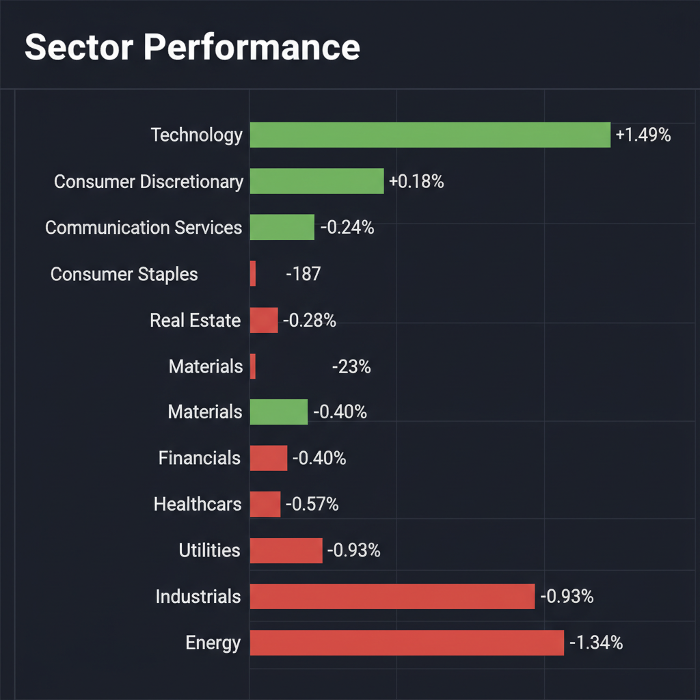
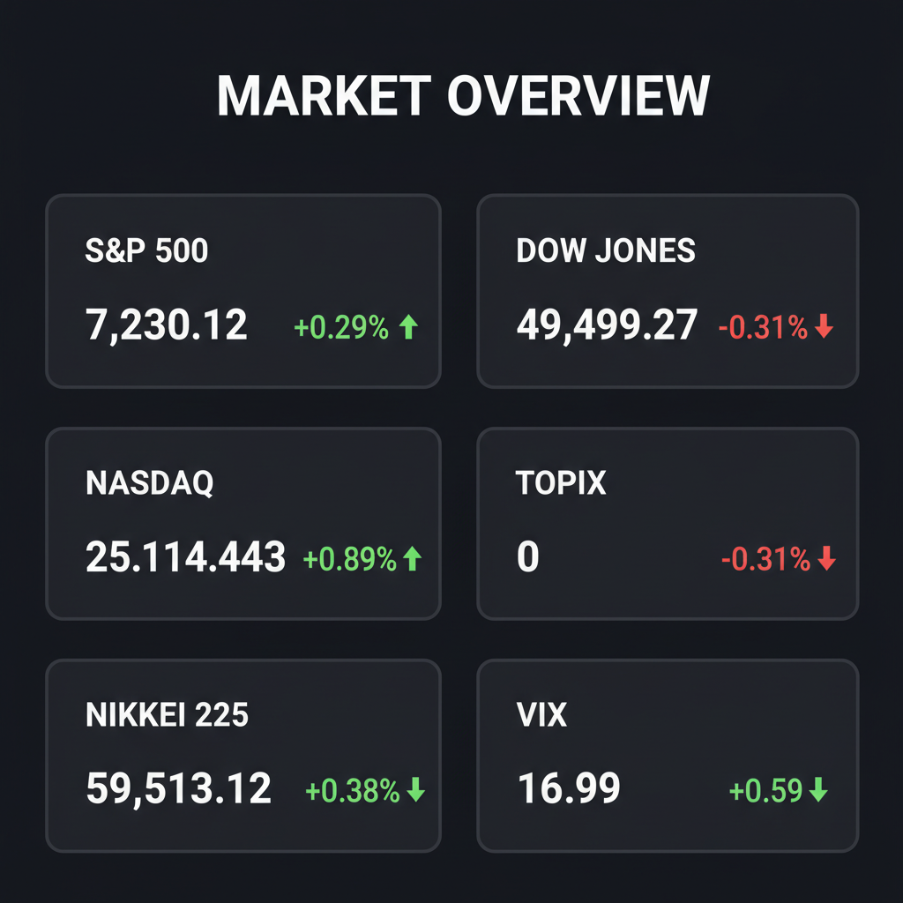

Daily Investment Report - 2026-05-02
Generated: 2026/5/2 7:25:15


以下に、投資チームミーティングでの分析を統合した、投資家向けの最終レポートをお届けします。
1. エグゼクティブサマリー
- ハイテク株主導で指数は最高値圏にあるものの、市場の幅は極めて狭く、VIX指数の逆行高など水面下では下落警戒感（ヘッジ需要）が急拡大しています。
- 製造業の投入コストが4年ぶりの高水準に達し、中東情勢による「真のオイルショック」懸念と相まって、高金利の長期化とスタグフレーションリスクが高まっています。
- 投資戦略としては、大型ハイテク株の過熱感を警戒して利益確定を進め、インフレ下でも価格転嫁力と強固なキャッシュフローを持つ「質の高い中小型株」への資金シフトを推奨します。
2. 注目銘柄リスト
強気（買い推奨）
- デジタルガレージ（4819） [約1,300億円]: 安定した決済インフラによる強固な黒字基盤を持ちつつ、AI・スタートアップ投資による爆発的なアップサイドを兼ね備えた魅力的な中小型株です。
- Wesco International（WCC） [約$8B]: B2Bの電気・インフラ向けディストリビューターとして好決算を発表。低PERで下値リスクが限定的であり、インフレ下でも底堅い成長が期待できます。
中立（様子見）
- Exodus Movement（EXOD） [約$400M]: 暗号資産決済の次世代インフラとしてTAM（潜在市場）は巨大で黒字基盤もありますが、直近の大型買収に伴う統合コストや業績への短期的な影響を見極める必要があります。
- ＱＤレーザ（6613） [約100億円]: データセンターの電力問題を解決するシリコンフォトニクス関連のディープテックとして大化けの素質を持ちますが、恒常的な赤字体制であり、高金利環境下での資金ショートリスクがあるためエントリーには慎重な判断が求められます。
- アトラシアン（TEAM） [約$40B]: 決算で28%急騰し、AI実装による強力な成長証明を行いましたが、テクニカル指標は極度の過熱（買われ過ぎ）を示しており、押し目を待つのが賢明です。
弱気（警戒）
- スピリット航空（SAVE） [約$250M]: 政府救済の協議が進んでいますが、恒常的な営業赤字と過剰債務、燃料費高騰の直撃を受けており、投資してはいけない典型的なバリュートラップです。
- サンリオ（8136） [約2,500億円]: 役員の不適切報酬疑惑による決算延期は、海外投資家が最も嫌忌する「ガバナンス不全」のシグナルであり、底打ちが確認できるまで手出し無用です。
3. セクター推奨ランキング
- 1位：テクノロジー・AIインフラ（中小型・ニッチトップ）：高金利下でも独自の成長ストーリーと価格転嫁力を持ち、企業のコスト削減（AIリストラ）需要を直接取り込めるため。
- 2位：日本の総合商社：資源高の恩恵と円安のサポートを受け、増益ガイダンスと高い株主還元が海外資金を惹きつけるため。
- 3位：金融・決済サービス：高金利の長期化が利ザヤ改善に寄与し、堅実なキャッシュフローを生み出しやすいため。
- 4位：エネルギー：原油高の思惑はあるものの、地政学リスクが直接的な生産・オペレーションの打撃（エクソンモービルの減益等）に繋がる危険性を孕んでいるため。
- 5位：航空・レガシー資本財：製造業の投入コスト増や燃料費高騰を消費者に価格転嫁できず、利益率が急激に圧迫されるため。
4. 今週の注目イベント
- 米国 雇用統計の発表（AIリストラの影響や労働市場の軟化を確認）
- 米国 CPI（消費者物価指数）の発表（製造業コスト増の価格転嫁とインフレ再燃の確認）
- 日銀関係者の政策発言・動向（利上げタイミングと日米金利差・為替への影響）
- スピリット航空と債券保有者間の救済合意期限に向けた動向
5. リスク要因
- スタグフレーションリスク：製造業の投入コストが4年ぶりの高水準にあり、ホルムズ海峡問題によるエネルギー高騰が重なることで、景気減速とインフレが同時進行する危険性。
- VIX指数のダイバージェンス：株価指数が最高値を更新する裏でVIXが16.99へと上昇しており、スマートマネーが下落ヘッジを急いでいる兆候。
- 集中リスクとマルチプル収縮：市場の資金がごく一部の大型ハイテク株に集中しており、金利高止まりが意識された瞬間に強烈なバリュエーション調整（株価急落）が起きるリスク。
- 日本企業のガバナンス不全の連鎖：サンリオの不適切報酬問題が他企業への警戒感に波及した場合、日本株全体から海外資金が流出するリスク。
6. アクションアイテム
- キャッシュ比率の引き上げ：急なボラティリティ拡大に備え、ポートフォリオ内の現金比率を30〜40%程度まで高める。
- 過熱した大型株の利益確定とヘッジ：急騰したハイテク株（AppleやAtlassianなど）を保有している場合、一部利益確定を行うか、VIXコールやプットオプションで下値を保護する。
- 中小型株への資金ローテーション：新規の買い付けは、自己資本で成長可能で安定したフリーキャッシュフローを生む質の高い中小型株（デジタルガレージやWescoなど）に限定する。
- コスト高・赤字銘柄の損切り：投入コスト上昇を転嫁できない労働集約型企業や、外部資金調達に依存する赤字グロース株のポジションを直ちに解消する。